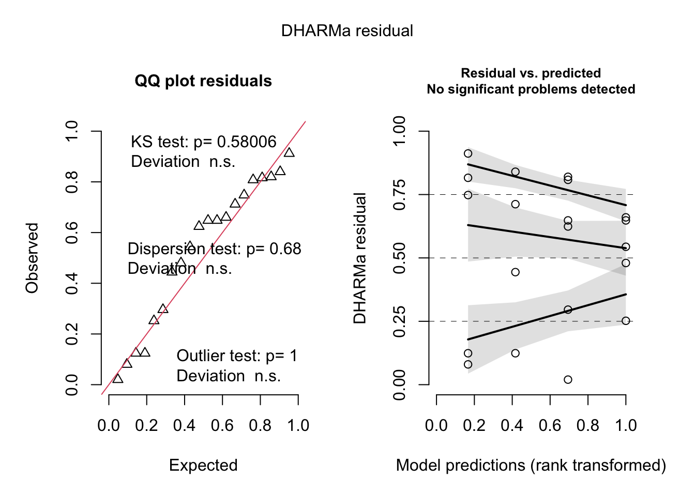

Codigo
# Cargar paquetes
library(tidyverse)
library(readxl)
library(ggthemes)
library(emmeans)
library(DT)
library(multcompView)
library(multcomp)En esta guía, aprenderás cómo realizar análisis de varianza (ANOVA) en RStudio paso a paso, utilizando diferentes diseños experimentales y comprobando las premisas estadísticas necesarias.
Esta guía proporciona una explicación paso a paso sobre cómo realizar análisis de varianza (ANOVA) con dos o más factores en RStudio, incluyendo la preparación de datos, la ejecución del modelo ANOVA y la interpretación de los resultados.
Primero, cargamos los paquetes necesarios y el conjunto de datos.
Calculamos el porcentaje de espigas con enfermedad y creamos una nueva columna en el conjunto de datos.
Creamos el modelo ANOVA considerando la interacción entre los tratamientos y las dosis.
Df Sum Sq Mean Sq F value Pr(>F)
treat 1 919.5 919.5 24.31 0.000151 ***
dose 1 920.9 920.9 24.34 0.000150 ***
treat:dose 1 747.7 747.7 19.76 0.000407 ***
Residuals 16 605.3 37.8
---
Signif. codes: 0 '***' 0.001 '**' 0.01 '*' 0.05 '.' 0.1 ' ' 1Utilizamos los paquetes performance y DHARMa para verificar las premisas de normalidad y homocedasticidad.
Si los datos no cumplen con las premisas, intentamos transformar los datos.
Df Sum Sq Mean Sq F value Pr(>F)
treat 1 12.928 12.928 13.980 0.00179 **
dose 1 5.663 5.663 6.124 0.02491 *
treat:dose 1 5.668 5.668 6.129 0.02486 *
Residuals 16 14.796 0.925
---
Signif. codes: 0 '***' 0.001 '**' 0.01 '*' 0.05 '.' 0.1 ' ' 1Warning: Non-normality of residuals detected (p = 0.050).OK: Error variance appears to be homoscedastic (p = 0.180).
Usamos el paquete emmeans para calcular las medias de los tratamientos.
Calculamos el coeficiente de variación usando el paquete agricolae.
Importamos otro conjunto de datos y visualizamos la interacción entre el tipo de almacenamiento y la humedad.
Creamos el modelo ANOVA considerando la interacción entre el tipo de almacenamiento y la humedad.
Df Sum Sq Mean Sq F value Pr(>F)
factor(tipo) 1 11215 11215 2375.8 3.64e-15 ***
factor(umidade) 2 42814 21407 4534.8 < 2e-16 ***
factor(tipo):factor(umidade) 2 2329 1165 246.7 1.79e-10 ***
Residuals 12 57 5
---
Signif. codes: 0 '***' 0.001 '**' 0.01 '*' 0.05 '.' 0.1 ' ' 1Importamos los datos y creamos una columna de rango para el análisis no paramétrico.
Df Sum Sq Mean Sq F value Pr(>F)
treat 1 220.00 220.00 14.204 0.00168 **
dose 1 105.34 105.34 6.801 0.01904 *
treat:dose 1 80.34 80.34 5.187 0.03684 *
Residuals 16 247.82 15.49
---
Signif. codes: 0 '***' 0.001 '**' 0.01 '*' 0.05 '.' 0.1 ' ' 1Usamos emmeans para calcular las medias con los datos de rango.
El resumen del modelo ANOVA nos proporciona los valores F y los p-valores para los efectos principales y las interacciones. Un p-valor menor a 0.05 indica una diferencia significativa entre los grupos.
Si la transformación de los datos (por ejemplo, usando logaritmos) mejora la normalidad y homocedasticidad, se puede proceder con la ANOVA transformada.
El paquete emmeans facilita la comparación de medias ajustadas. Los resultados se pueden visualizar con cld() para ver las diferencias significativas entre los grupos.
El coeficiente de variación proporciona una medida de la variabilidad relativa de los datos.
Esta guía ha proporcionado una explicación detallada de cómo realizar ANOVA con múltiples factores en RStudio, incluyendo la preparación de datos, la verificación de premisas, la transformación de datos y la interpretación de resultados. Utilizar los paquetes tidyverse, readxl, performance, DHARMa, emmeans, multcomp, agricolae y DT facilita la ejecución y análisis de ANOVA de manera efectiva.
# Análisis de Varianza (ANOVA)
En esta guía, aprenderás cómo realizar análisis de varianza (ANOVA) en RStudio paso a paso, utilizando diferentes diseños experimentales y comprobando las premisas estadísticas necesarias.
# ANOVA con Múltiples Factores
Esta guía proporciona una explicación paso a paso sobre cómo realizar análisis de varianza (ANOVA) con dos o más factores en RStudio, incluyendo la preparación de datos, la ejecución del modelo ANOVA y la interpretación de los resultados.
## Preparación Pre-Análisis
### Cargar Paquetes e Importar Datos
Primero, cargamos los paquetes necesarios y el conjunto de datos.
```{r}
# Cargar paquetes
library(tidyverse)
library(readxl)
library(ggthemes)
library(emmeans)
library(DT)
library(multcompView)
library(multcomp)
```
```{r}
# Cargar datos desde un archivo Excel
dat <- read_excel("dados-diversos.xlsx", "fungicida_vaso")
dat |>
DT::datatable(
extensions = 'Buttons',
options = list(dom = 'Bfrtip',
buttons = c('excel', "csv")))
```
### Crear Nueva Columna con Porcentaje de Espigas con Enfermedad
Calculamos el porcentaje de espigas con enfermedad y creamos una nueva columna en el conjunto de datos.
```{r}
dat2 <- dat |>
mutate(inc = dis_sp / n_sp * 100)
dat2|>
DT::datatable(
extensions = 'Buttons',
options = list(dom = 'Bfrtip',
buttons = c('excel', "csv")))|>
formatRound('inc', 2)
```
```{r}
# Visualización inicial de los datos
dat2 |>
ggplot(aes(x = treat, y = inc, color=treat)) +
geom_jitter(width = 0.1) +
facet_wrap(~dose)+
theme_few()+
scale_color_few()
```
## Modelo ANOVA: Datos Cualitativos
### Generar Modelo ANOVA
Creamos el modelo ANOVA considerando la interacción entre los tratamientos y las dosis.
```{r}
m1 <- aov(inc ~ treat * dose, data = dat2)
summary(m1)
```
### Chequear Premisas del Modelo
Utilizamos los paquetes `performance` y `DHARMa` para verificar las premisas de normalidad y homocedasticidad.
```{r}
library(performance)
check_normality(m1)
check_heteroscedasticity(m1)
library(DHARMa)
plot(simulateResiduals(m1))
```
### Transformación de Datos
Si los datos no cumplen con las premisas, intentamos transformar los datos.
```{r}
m1 <- aov(log(inc + 0.5) ~ treat * dose, data = dat2)
summary(m1)
check_normality(m1)
check_heteroscedasticity(m1)
plot(simulateResiduals(m1))
```
### Estimación de Medias de Tratamientos
Usamos el paquete `emmeans` para calcular las medias de los tratamientos.
```{r}
means_m1<- cld(emmeans(m1, ~ treat | dose, type = "response"),alpha = 0.05, Letters = LETTERS,reverse=T)
means_m1|>
DT::datatable(
extensions = 'Buttons',
options = list(dom = 'Bfrtip',
buttons = c('excel', "csv"))) |>
formatRound(c('response','SE','lower.CL','upper.CL'), 2)
```
### Coeficiente de Variación
Calculamos el coeficiente de variación usando el paquete `agricolae`.
```{r}
library(agricolae)
cv.model(m1)
```
## ANOVA con Tres Factores
### Importar y Visualizar Datos
Importamos otro conjunto de datos y visualizamos la interacción entre el tipo de almacenamiento y la humedad.
```{r}
milho <- read_excel("dados-diversos.xlsx", "armazena")
milho |>
filter(tempo == 8) |>
ggplot(aes(factor(tipo), peso_mil, color = factor(umidade))) +
geom_jitter(width = 0.1) +
facet_wrap(~ umidade) +
theme_few()+
scale_color_few()
```
### Generar Modelo ANOVA
Creamos el modelo ANOVA considerando la interacción entre el tipo de almacenamiento y la humedad.
```{r}
milho2 <- milho |>
filter(tempo == 8)
m2 <- aov(peso_mil ~ factor(tipo) * factor(umidade), data = milho2)
summary(m2)
```
## Datos No Paramétricos con Dos o Más Factores
### Importar Datos y Crear Columna de Rango
Importamos los datos y creamos una columna de rango para el análisis no paramétrico.
```{r}
fung <- read_excel("dados-diversos.xlsx", "fungicida_vaso")
fung2 <- fung |>
mutate(inc = inf_seeds / n_seeds * 100, rank_inc = rank(inc))
fung2 |>
DT::datatable(
extensions = 'Buttons',
options = list(dom = 'Bfrtip',
buttons = c('excel', "csv")))
```
```{r}
# Generar modelo ANOVA con datos de rango
m3 <- aov(rank_inc ~ treat * dose, data = fung2)
summary(m3)
```
### Estimación de Medias con Datos de Rango
Usamos `emmeans` para calcular las medias con los datos de rango.
```{r}
means_rank<- cld(emmeans(m3, ~ treat | dose ),alpha = 0.05, Letters = LETTERS,reverse=T)
means_rank |>
DT::datatable(
extensions = 'Buttons',
options = list(dom = 'Bfrtip',
buttons = c('excel', "csv"))) |>
formatRound(c('emmean','SE','lower.CL','upper.CL'), 2)
```
## Interpretación de Resultados
### Resultados del Modelo ANOVA
El resumen del modelo ANOVA nos proporciona los valores F y los p-valores para los efectos principales y las interacciones. Un p-valor menor a 0.05 indica una diferencia significativa entre los grupos.
### Premisas del Modelo
- **Normalidad**: Se comprueba con pruebas de normalidad de los residuos. Si los residuos no son normales, se puede considerar transformar los datos.
- **Homocedasticidad**: Se comprueba si las variancias de los residuos son constantes. Si no se cumple, se puede considerar usar métodos robustos o transformaciones de datos.
### Transformación de Datos
Si la transformación de los datos (por ejemplo, usando logaritmos) mejora la normalidad y homocedasticidad, se puede proceder con la ANOVA transformada.
### Comparaciones de Medias
El paquete `emmeans` facilita la comparación de medias ajustadas. Los resultados se pueden visualizar con `cld()` para ver las diferencias significativas entre los grupos.
### Coeficiente de Variación
El coeficiente de variación proporciona una medida de la variabilidad relativa de los datos.
## Aprendizaje del día
Esta guía ha proporcionado una explicación detallada de cómo realizar ANOVA con múltiples factores en RStudio, incluyendo la preparación de datos, la verificación de premisas, la transformación de datos y la interpretación de resultados. Utilizar los paquetes `tidyverse`, `readxl`, `performance`, `DHARMa`, `emmeans`, `multcomp`, `agricolae` y `DT` facilita la ejecución y análisis de ANOVA de manera efectiva.